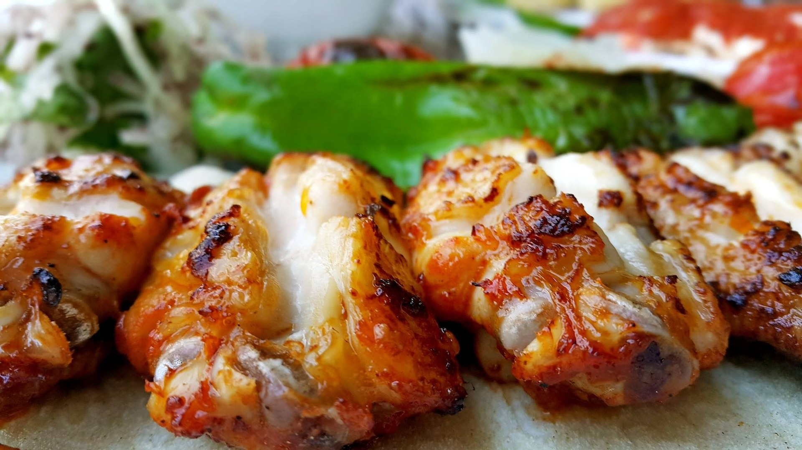
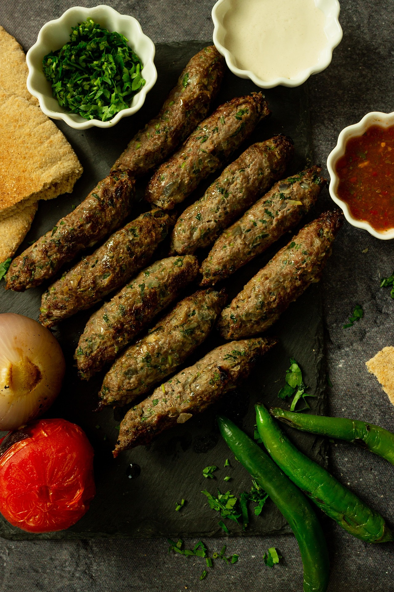
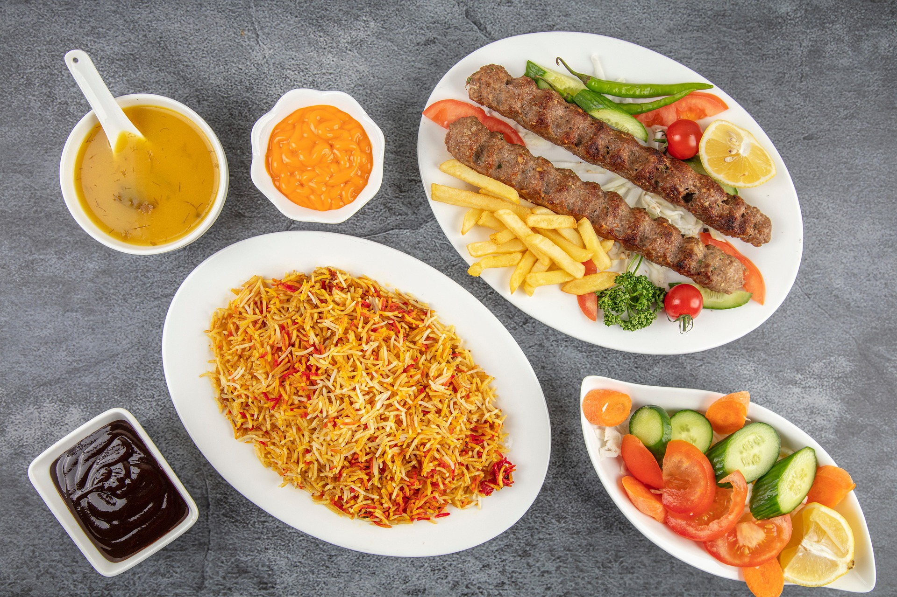

Sheek Kabab is a tempting food in Bangladesh. It is made with cubic pieces of beef or mutton. The cuisine is prepared with meat, and it is marinated the spices. Later it is put together with for melting in a Prod or Skewer. The process of marinating will inspire us to taste it. In every restaurant, you will find Sheek Kabab, and it is a very popular evening snack in Bangladesh. It is



